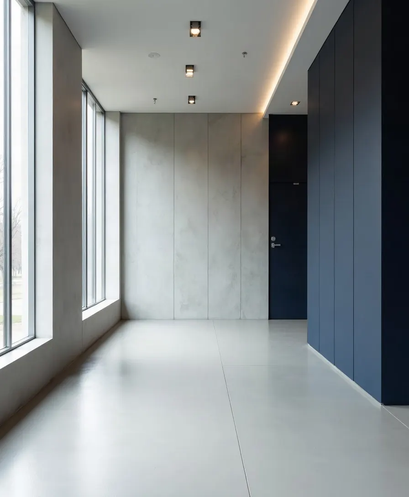

01
Rights-focused analysis
We identify the rights, constitutional principles and legal duties engaged by each matter.

04 / Why choose us
The practice combines legal analysis, strategic litigation and a public-interest perspective across rights-related matters.
Our standard
The practice’s public profile reflects strategic litigation, public-interest advocacy and sustained engagement with rights-focused organisations.
01
We identify the rights, constitutional principles and legal duties engaged by each matter.

02
We assess procedure, evidence and legal strategy with the objective of advancing the client’s rights and the issues at stake.
03
Where a matter has broader social, institutional or community implications, those consequences inform the legal strategy.

04
Kevin Arende Oriri’s public profile records sustained pro bono work with civil-society and community justice organisations.

05
Governance, public accountability and right to information are among the focus areas publicly associated with the practice.
06
We aim to keep clients informed about the legal issues, options and next steps as a matter progresses.
Public record
Reported decisions and Court of Appeal cause lists record Arende Oriri & Associates Advocates or Arende Oriri & Co. Advocates acting in constitutional and public-interest matters, including Mwangi v Attorney General & 2 Others; Independent Policing Oversight Authority & 6 Others, Public Benefit Organizations Regulatory Authority v Caleb Otieno & 13 Others, and Kenya Peasants League v Attorney General & 19 Others.
In practice
Human rights and public-interest matters often combine individual facts with wider constitutional, institutional or community questions. The practice is structured around that intersection.
Start a conversation ↗